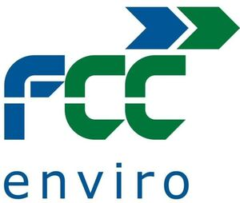

Trade Mark Journal No.2026/011 13 March 2026
WO0000001890736 (6,7,9,11,19,20,35,37,39,40,42)
Office of origin: European Union Intellectual Property Office (EUIPO)
Date of International Registration:19 May 2025
Date of designation in the UK:
19 May 2025

The mark contains the colours blue and green
International priority date claimed: 16 May 2025
(European Union Intellectual Property Office (EUIPO))
(19188281)
- Class 6
- Marquees of metal; posts of metal; transportable buildings of metal; water pipe valves (of metal); duckboards of metal.
- Class 7
- Sewage treatment machines; pumping and vacuum machines, equipment and apparatus; filtering machines used in sewage handling; drainage machines; water supply machines, namely pumps; pumps for the extraction of liquids; machines for shredding scrap; garbage disposal machines; waste material conveying machines; machine tools for removing waste material; recycling machines; composting machines; pipe laying machines; water heaters, being parts of machines; sewage pulverizers; feedwater regulators and degassers; apparatus for manufacturing mineral and aerated waters; agricultural, gardening and forestry machines; machines for the treatment of materials; grinding machines; filtering machines; waste treatment and recycling machines; machines for recovering waste energy, in any form; machines for remediation of contaminated soil; machines for sweeping, cleaning and maintaining buildings and their equipment; exterior rinsing and cleaning machines; machines for cleaning streets; machines for sweeping swimming pools; machines and equipment for the pre-collection, collection, transfer and transport of waste; machine tools; water heaters (parts of machines); sewage pulverizers; feedwater regulators and degassers; apparatus for manufacturing mineral and aerated waters.
- Class 9
- Water level indicators; scientific, measuring, signaling and checking (supervision) apparatus and instruments; machines for inspecting sewer networks or water networks and ornamental or drinking fountains.
- Class 11
- Water intake apparatus, apparatus and installations for softening water; water filtering apparatus; water purification apparatus and machines; low-pressure water tanks; water heaters; water desalination installations; water flushing installations; water coolers and sterilizers; installations for provisioning, distributing and conducting water.
- Class 19
- Water pipes not of metal; Water pipe valves (neither of metal nor of plastic materials); gutters not of metal; canopies, not of metal; posts, not of metal; duckboards, not of metal.
- Class 20
- Containers, not of metal [storage, transport]; benches (furniture); water pipe valves of plastic materials; signboards of wood or plastic materials.
- Class 35
- Import, export services for machinery, materials and equipment for the provision of environmental services and in particular for agricultural, gardening and forestry machines, machines for the treatment of materials, grinding machines, filtering machines, machines for waste treatment and recycling, machines for waste energy recovery, in any form, machines for remediation of contaminated soil, machines for sweeping, cleaning and maintaining buildings and their equipment, machines for exterior clearing and cleaning, machines for cleaning streets, machines for sweeping swimming pools, machines and equipment for pre-collection, collection, transfer and transport of waste, machines for inspection, cleaning and maintenance of sewerage networks or water networks and ornamental or drinking fountains; Import, export services for machinery, materials and equipment for the provision of environmental services and in particular for agricultural, gardening and forestry machines, machines for the treatment of materials, grinding machines, filtering machines, machines for waste treatment and recycling, machines for waste energy recovery, in any form, machines for remediation of contaminated soil, machines for sweeping, cleaning and maintaining buildings and their equipment, machines for exterior clearing and cleaning, machines for cleaning streets, machines for sweeping swimming pools, machines and equipment for pre-collection, collection, transfer and transport of waste, machines for inspection, cleaning and maintenance of sewerage networks or water networks and ornamental or drinking fountains; advertising, promotional and marketing services; provision of advertising, promotional and marketing in public spaces; provision of advertising, promotional and marketing spaces on street furniture, lampposts, street lights, bollards, benches, traffic signs, traffic lights, bus stops, billboards, travel boards and vehicles; rental of advertising spaces on street furniture, lampposts, street lights, bollards, benches, traffic signs, traffic lights, bus stops, billboards, travel boards and vehicles; import and export of advertising space in the form of street furniture, lampposts, street lights, bollards, benches, traffic signs, traffic lights, bus stops, billboards, travel boards and vehicles.
- Class 37
- cleaning, inspection and maintenance of street furniture, lampposts, street lights, bollards, benches, traffic signs, traffic lights, bus stops, billboards, travel boards and vehicles; rental of advertising spaces on street furniture, lampposts, street lights, bollards, benches, traffic signs, traffic lights, bus stops, billboards, travel boards and vehicles; cleaning, inspection and maintenance of advertising space on street furniture, lampposts, street lights, bollards, benches, traffic signs, traffic lights, bus stops, billboards, travel boards and vehicles; maintenance services for machinery, tools, vehicles, installations, materials and equipment, furnishings and urban equipment as well as signaling elements; construction and maintenance of water and waste treatment and purification plants and installations; electric, electronic and telecommunications installation and assemblies; construction and maintenance of buildings, stores, industries, plants, installations, parks, gardens, green areas, sewerage networks and cesspits; rental of machinery, tools, installations, materials and equipment, furnishings and urban equipment as well as signaling elements.
- Class 39
- Waste transport services; supply and distribution of machinery, tools, vehicles, installations, materials and equipment, furnishings and urban equipment as well as signaling elements; vehicle rental.
- Class 40
- Treatment of waste; transformation of all types of waters.
- Class 42
- Design of machinery, tools, vehicles, installations, materials and equipment, furnishings and urban equipment as well as signaling elements; design, research and development of water and waste treatment and purification plants and installations and of electric, electronic and telecommunications assemblies; research; technical engineering services, including projects, studies and reports as well as conducting of pre-investment studies, quality controls.
FCC SERVICIOS MEDIO AMBIENTE HOLDING, S.A.
Representative: Sonder & Clay, Calls Wharf, 2 The Calls Leeds LS2 7JU UNITED KINGDOM